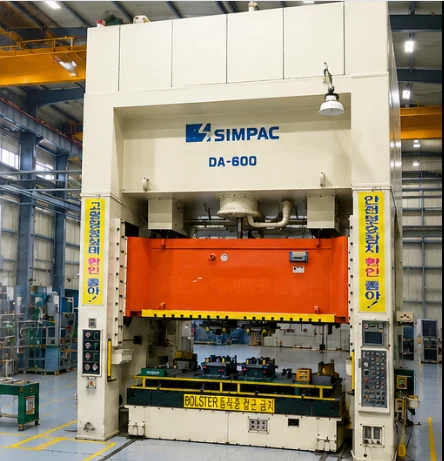
PRESS
600톤 프레스
DA-600 · 금형 시험 및 프레스 공정
FACILITIES
OUR FACILITIES
프레스, 머시닝센터, 연삭 및 와이어 가공.
공정에 맞는 설비로 제작의 완성도를 높입니다.

DA-600 · 금형 시험 및 프레스 공정
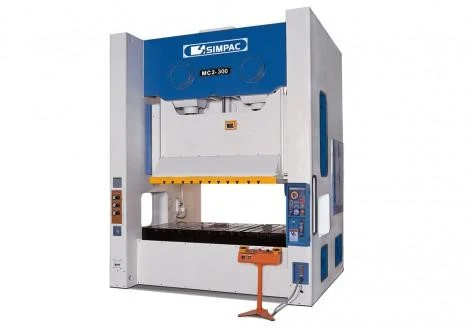
MC2-300 · 프레스 공정
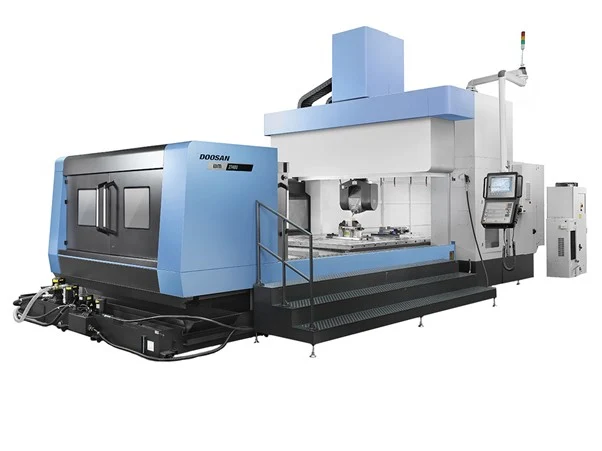
BM2740 · 대형 금형 가공
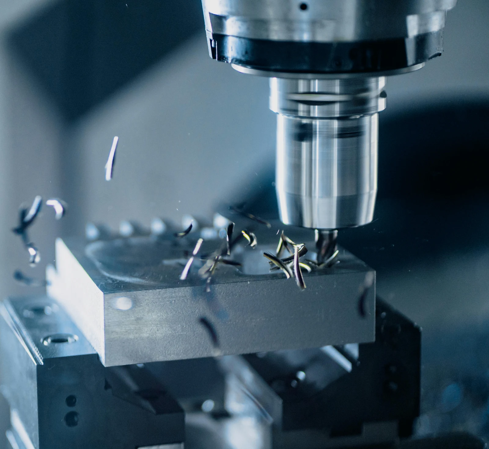
정밀 금형 및 부품 가공
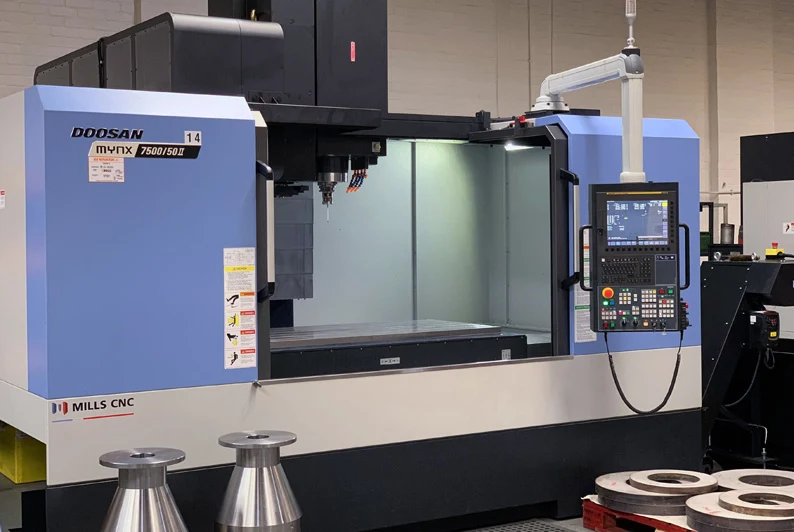
2대
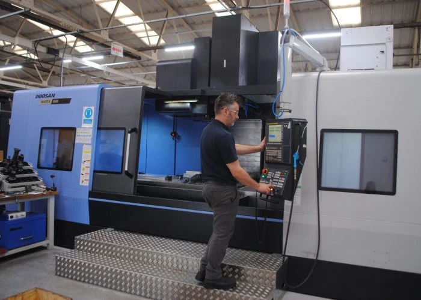
1대
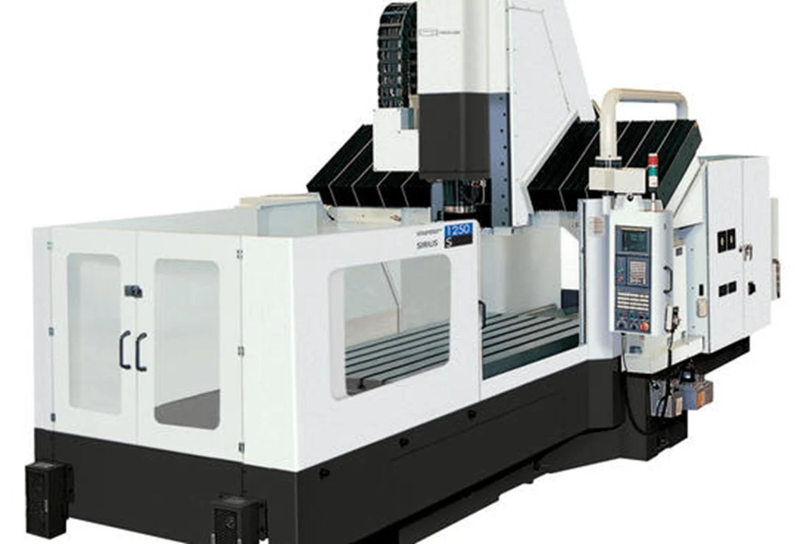
2대
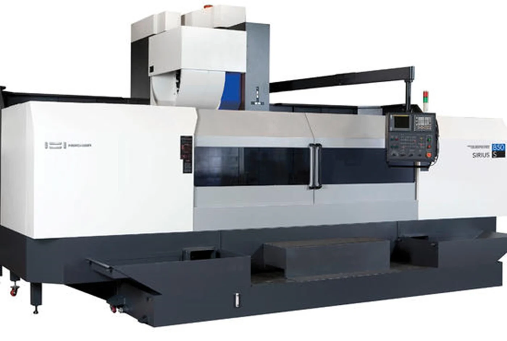
1대
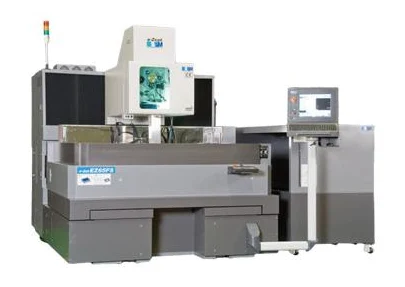
EZ65FS · 정밀 형상 가공
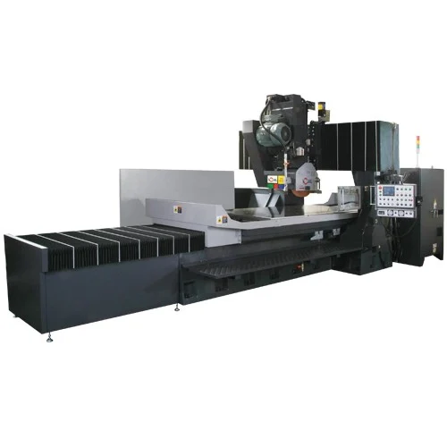
HGS2512 · 정밀 연삭 가공
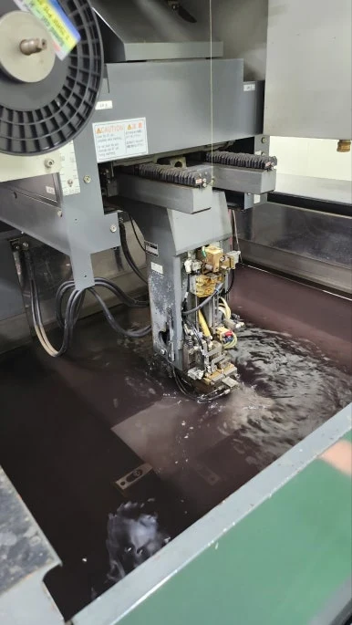
정밀 형상 가공 작업
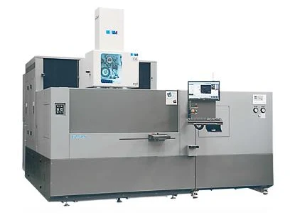
와이어 컷팅 설비
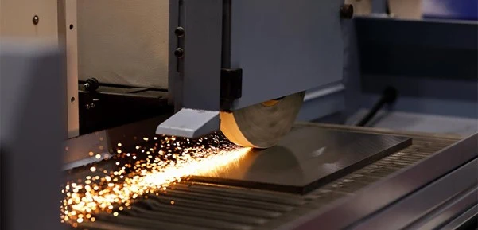
금형 부품 표면 및 정밀 마감
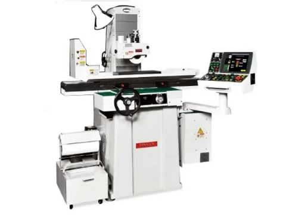
정밀 성형 연마
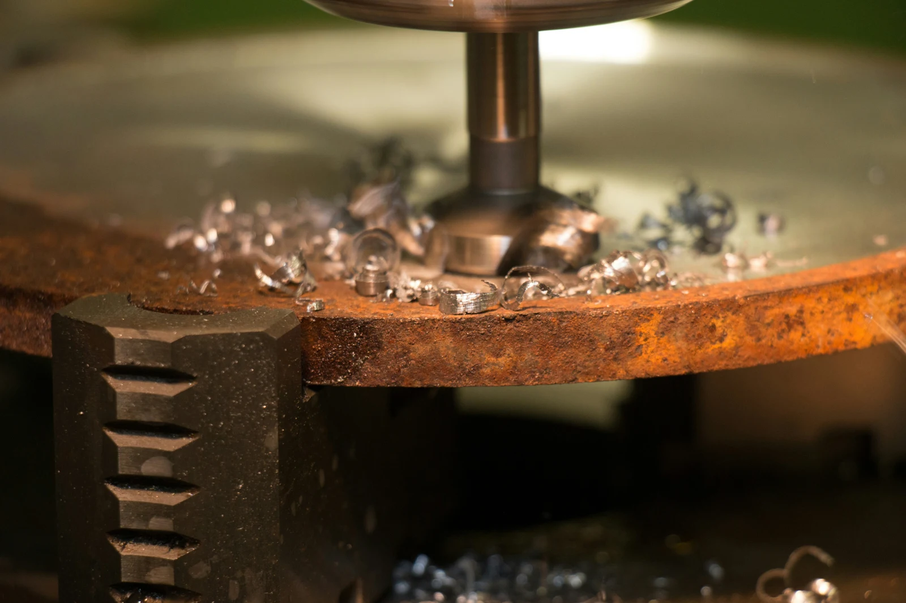
금형 부품 형상 가공
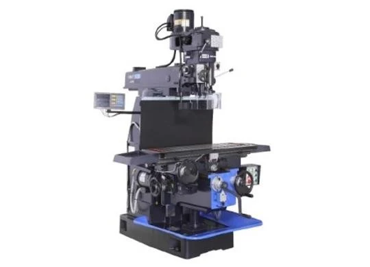
금형 부품 밀링 가공
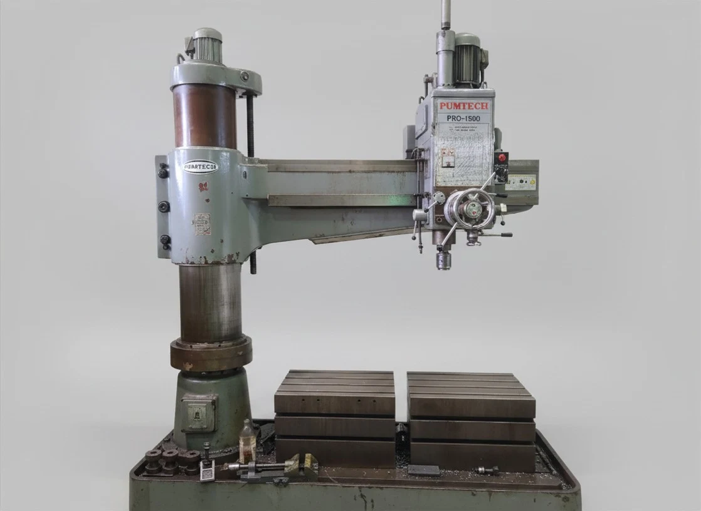
드릴링 가공 설비
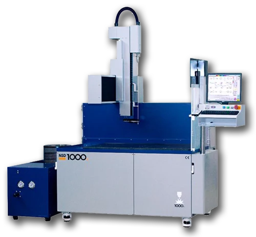
미세 홀 가공 설비
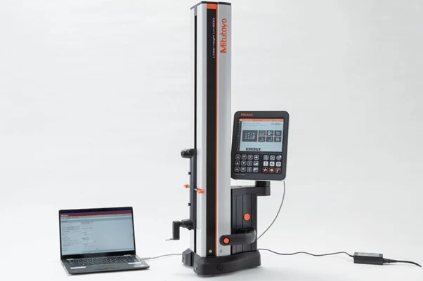
가공품 치수 확인
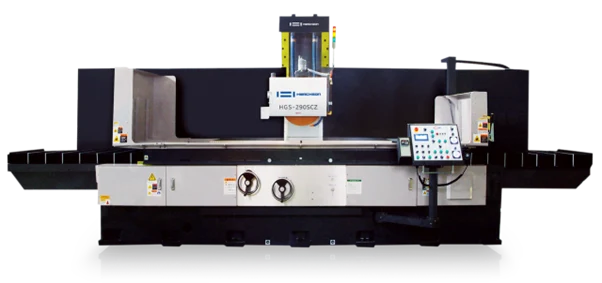
중형 평면연삭기 · 2대
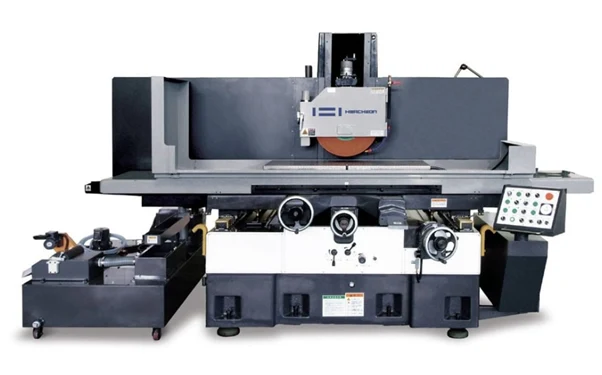
소형 평면연삭기 · 1대
| 설비명 | 수량 |
|---|---|
| DA-600 | — |
| MC2-300 | — |
| 설비명 | 수량 |
|---|---|
| MYNX-7500/50 | 2 |
| MYNX-9500/50 | 1 |
| SIRIUS-1250 | 2 |
| SIRUS-850 | 1 |
| BM-2740 | 1 |
| 설비명 | 수량 |
|---|---|
| HGS-2512 SCYZ | 1 |
| HGS-209 SCZ | 2 |
| HGS 126A | 1 |
| 성형연삭기 | 1 |
| 설비명 | 수량 |
|---|---|
| EZ65FS | 1 |
| EZ50FS | 1 |
| NW1100 | 1 |
| ACE800 | 1 |
| ACE535 | 1 |
| 슈퍼드릴 | 1 |
| 설비명 | 수량 |
|---|---|
| 화천 2호기 밀링 | 1 |
| 레디알 | 2 |
| 레이저마킹 | 1 |
| LH-60 측정기 | 1 |